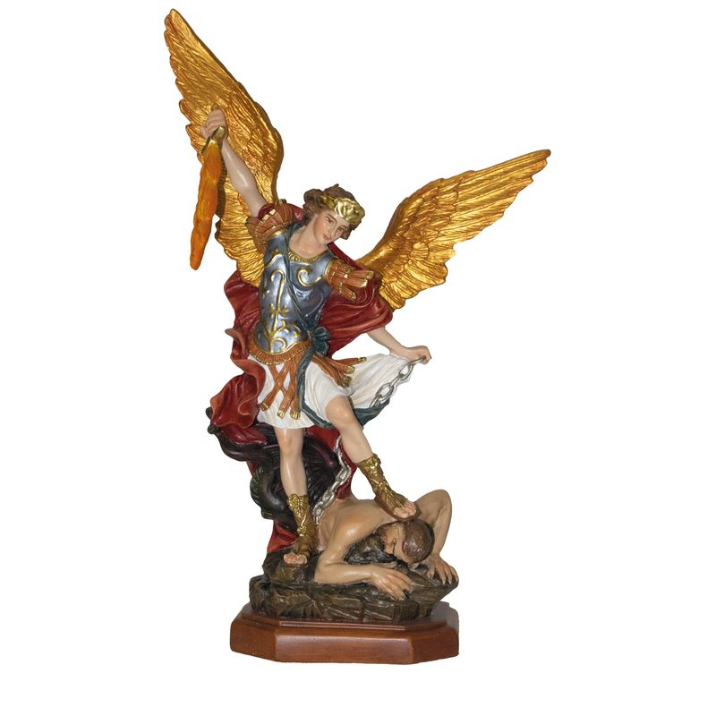

Piezas listas para envío inmediato, disponibles en nuestro catálogo.
Tamaño, acabado, color e inscripción a medida.
Encargos a mayor escala para parroquias, conventos y colecciones.
Restauramos y repintamos esculturas religiosas antiguas o dañadas.
Exportamos a Estados Unidos y otros países.